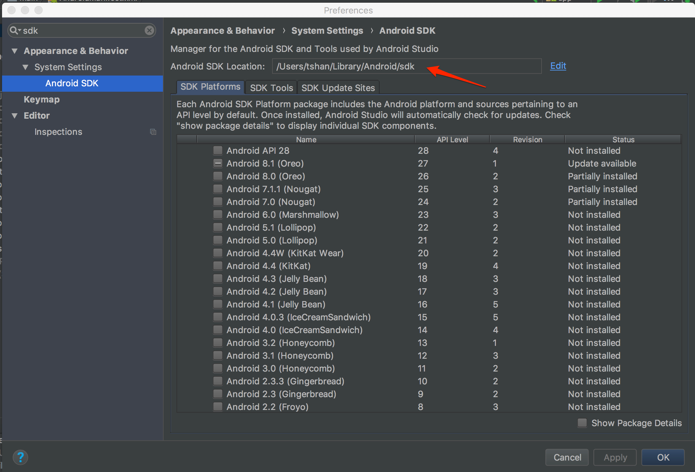

Wireless Debugging
When developing on android, you have the option to wireless connect to your computer. To do this you will need to do following setups.
Setup Wireless Debugging
First, connect your mobile device with an usb cable and make sure you have enable the developer option on your phone. Go to wireless settings, find the current IP address for the phone connecting the same network of your computer.
After you have the IP address, you run the following command.
1 | ./adb tcpip 5555 |
After that you have enabled wireless debugging for that device. You can see that device when you hit run in android studio.
To turnoff wireless debugging by reboot the device or run
1 | adb usb |
Where is ADB
If you cannot find your adb tool, you can find how to get adb here. Otherwise you can skip this section.
Open android studio and open preference by cmd + , and search for SDK. The first option: Android SDK is where you want to go. You can see Android SDK Location here.

Now go to that location in terminal. Android adb binary is located under .../platform-tools/adb
1 | cd ~/Library/Android/sdk/platform-tools |
Now you can use adb as is.